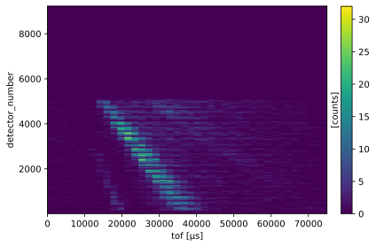
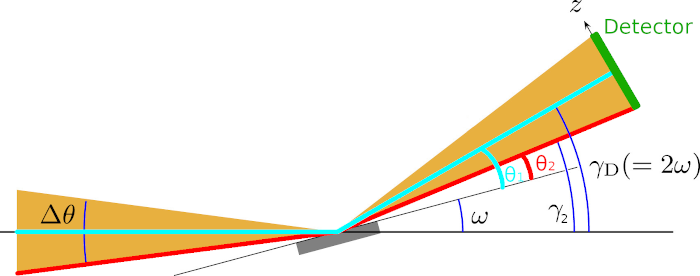
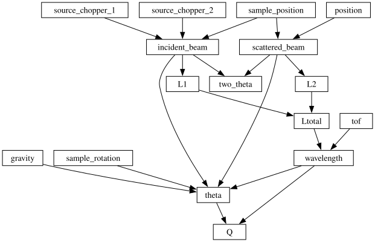
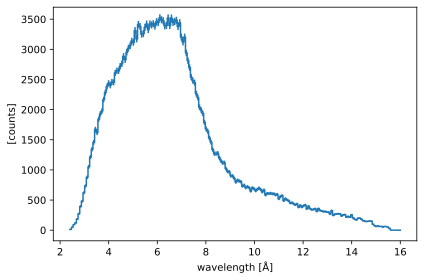
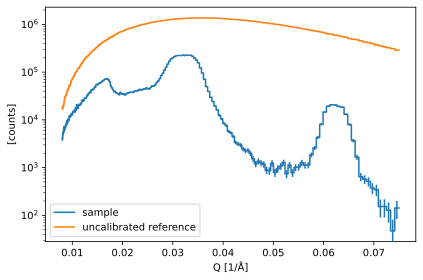
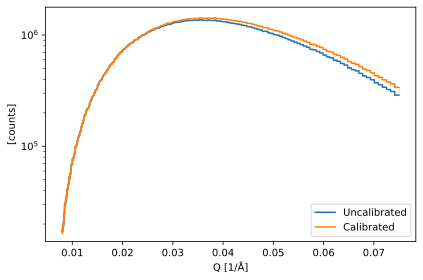
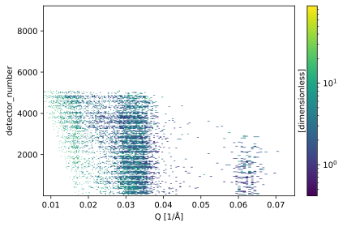
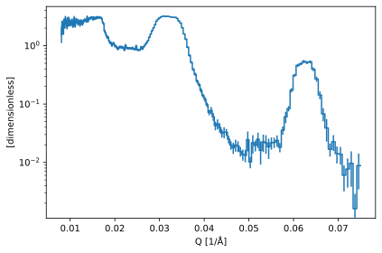
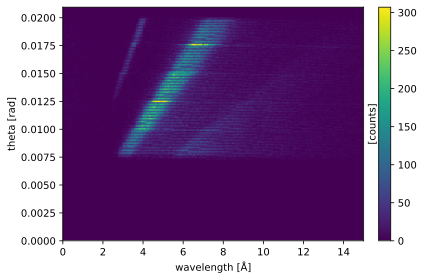

Divergent data reduction for Amor
Contents
Divergent data reduction for Amor#
In this notebook, we will look at the reduction workflow for reflectometry data collected from the PSI instrument Amor in divergent beam mode. This is a living document and there are plans to update this as necessary with changes in the data reduction methodology and code.
We will begin by importing the modules that are necessary for this notebook.
[1]:
import scipp as sc
import plopp as pp
from ess import amor, reflectometry
import ess
[2]:
logger = ess.logging.configure_workflow('amor_reduction', filename='amor.log')
The Amor beamline#
Before we can load the data, we need to define the parameters of the beamline and briefly discuss the measurement philosophy. We begin by defining the convention for naming angles in our set-up. We use the Fig. 5 from the paper by Stahn & Glavic (2016), which is reproduced below (along with its caption).

The yellow area shows the incoming and reflected beam, both with the divergence \(\Delta \theta\). The inclination of the sample relative to the center of the incoming beam (here identical to the instrument horizon) is called \(\omega\), and the respective angle of the reflected beam relative to the same axis is \(\gamma\).
In general the detector center is located at \(\gamma_{\rm D} = 2\omega\). These are instrument coordinates and should not be confused with the situation on the sample, where the take-off angle of an individual neutron trajectory is called \(\theta\).
The supermirror reference#
The normalization of data from the Amor instrument in divergent mode requires a reference measurement of a neutron supermirror. The supermirror is not a perfect supermirror, and is described with some properties, an \(m\)-value, a critical edge, and an \(\alpha\), from which we can calibrate the supermirror. This reference measurement facilitates two normalizations on our data: - normalization of neutron count per unit time, assuming that the instrument flux is constant between the supermirror measurement and our sample measurement, - normalization over the detector pixels, to account for differences in pixel efficiency. It is important when this normalization is performed that the differences in count time and beam footprint are accounted for such that the measurements are commensurate.
The amor module provides a helper function that generates the default beamline parameters. This function requires the sample rotation angle (\(\omega\)) as an input to fully define the beamline. In the future, all these beamline parameters (including the sample rotation) will be included in the file meta data. For now, we must define this manually, and the rotation is different for the sample and reference files.
[3]:
sample_rotation = sc.scalar(0.7989, unit='deg')
sample_beamline = amor.make_beamline(sample_rotation=sample_rotation)
reference_rotation = sc.scalar(0.8389, unit='deg')
reference_beamline = amor.make_beamline(sample_rotation=reference_rotation)
Setting the experiment metadata#
We use the Orso reflectometry standard and its Python interface orsopy to record important metadata on the experiment. The orso object will also be used at the end of the reduction to write a standard-compliant results file.
[4]:
from orsopy import fileio
from ess.amor.orso import make_orso
owner = fileio.base.Person(
'Jochen Stahn', 'Paul Scherrer Institut', 'jochen.stahn@psi.ch'
)
sample = fileio.data_source.Sample(
'Ni/Ti Multilayer', 'gas/solid', 'air | (Ni | Ti) * 5 | Si'
)
creator = fileio.base.Person(
'Andrew R. McCluskey', 'European Spallation Source', 'andrew.mccluskey@ess.eu'
)
orso = make_orso(
owner=owner,
sample=sample,
creator=creator,
reduction_script='https://github.com/scipp/ess/blob/main/docs/instruments/amor/amor_reduction.ipynb',
)
Loading the data#
The sample.nxs file is the experimental data file of interest, while reference.nxs is the reference measurement of the neutron supermirror. The amor.load function can be used to load these files and perform some early preprocessing:
The
tofvalues are converted from nanoseconds to microseconds.The raw data contains events coming from two pulses, and these get folded into a single
tofrange.
We show and plot the resulting scipp.DataArray for just the sample below.
[5]:
sample = amor.load(
amor.data.get_path("sample.nxs"), orso=orso, beamline=sample_beamline
)
reference = amor.load(
amor.data.get_path("reference.nxs"), orso=orso, beamline=reference_beamline
)
sample
Downloading file 'sample.nxs' from 'https://public.esss.dk/groups/scipp/ess/amor/1/sample.nxs' to '/home/runner/.cache/ess/amor/1'.
Downloading file 'reference.nxs' from 'https://public.esss.dk/groups/scipp/ess/amor/1/reference.nxs' to '/home/runner/.cache/ess/amor/1'.
[5]:
- detector_number: 9216
- tof: 1
- beam_size()float64mm2.0
Values:
array(2.) - detector_number(detector_number)int321, 2, ..., 9215, 9216
Values:
array([ 1, 2, 3, ..., 9214, 9215, 9216], dtype=int32) - detector_shape()PyObjectDataGroup(sizes={'face': 9216, 'face_index|detector_number': 2, 'vertex': 980...
Values:
DataGroup(sizes={'face': 9216, 'face_index|detector_number': 2, 'vertex': 9801, 'winding_order': 36864}, keys=[ detector_faces: Variable({'face': 9216, 'face_index|detector_number': 2}), faces: Variable({'face': 9216}), vertices: Variable({'vertex': 9801}), winding_order: Variable({'winding_order': 36864}), ]) - detector_spatial_resolution()float64m0.0025
Values:
array(0.0025) - gravity()vector3m/s^2[ 0. -9.80665 0. ]
Values:
array([ 0. , -9.80665, 0. ]) - position(detector_number)vector3m[-0.064 0.09459759 4.12644383], [-0.05987097 0.09459759 4.12644383], ..., [0.05987097 0. 4. ], [0.064 0. 4. ]
Values:
array([[-0.064 , 0.09459759, 4.12644383], [-0.05987097, 0.09459759, 4.12644383], [-0.05574194, 0.09459759, 4.12644383], ..., [ 0.05574194, 0. , 4. ], [ 0.05987097, 0. , 4. ], [ 0.064 , 0. , 4. ]]) - sample_position()vector3m[0. 0. 0.]
Values:
array([0., 0., 0.]) - sample_rotation()float64deg0.7989
Values:
array(0.7989) - sample_size()float64mm10.0
Values:
array(10.) - source_chopper_1()PyObjectDataGroup(sizes={}, keys=['frequency', 'position', 'phase'])
Values:
DataGroup(sizes={}, keys=[ frequency: Variable({}), position: Variable({}), phase: Variable({}), ]) - source_chopper_2()PyObjectDataGroup(sizes={}, keys=['frequency', 'position', 'phase'])
Values:
DataGroup(sizes={}, keys=[ frequency: Variable({}), position: Variable({}), phase: Variable({}), ]) - tof(tof [bin-edge])float64µs0.0, 7.500e+04
Values:
array([ 0., 75000.]) - transformations()PyObjectDataGroup(sizes={}, keys=['translation'])
Values:
DataGroup(sizes={}, keys=[ translation: DataArray({}), ])
- (detector_number, tof)DataArrayViewbinned data [len=0, len=0, ..., len=0, len=0]
dim='event', content=DataArray( dims=(event: 261790), data=float32[counts], coords={'event_time_zero':datetime64[ns], 'tof':float64[µs]})
- orso()PyObjectOrso( data_source=DataSource( owner=Person(n...
Values:
Orso( data_source=DataSource( owner=Person(name='Jochen Stahn', affiliation='Paul Scherrer Institut', contact='jochen.stahn@psi.ch'), experiment=Experiment(title='commissioning', instrument='AMOR', start_date='2020-11-25', probe='neutrons', facility='Paul Scherrer Institut'), sample=Sample(name='Ni/Ti Multilayer', category='gas/solid', composition='air | (Ni | Ti) * 5 | Si'), measurement=Measurement( instrument_settings=InstrumentSettings( incident_angle=Value(None), wavelength=Value(None), ), data_files=['/home/runner/.cache/ess/amor/1/sample.nxs'], scheme='angle- and energy-dispersive', ), ), reduction=Reduction( software=Software(name='scipp-ess', version='24.1.1.dev5+g8409fb3', platform='Linux-6.5.0-1016-azure-x86_64-with-glibc2.10'), creator=Person(name='Andrew R. McCluskey', affiliation='European Spallation Source', contact='andrew.mccluskey@ess.eu'), corrections=['chopper ToF correction'], computer='fv-az773-140', script='https://github.com/scipp/ess/blob/main/docs/instruments/amor/amor_reduction.ipynb', ), columns=[Column(name='Qz', unit='1/angstrom', dimension='wavevector transfer'), Column(name='R', dimension='reflectivity'), Column(name='sR', dimension='standard deivation of reflectivity'), Column(name='sQz', unit='1/angstrom', dimension='standard deviation of wavevector transfer resolution')], )
By simply plotting the data, we get a first glimpse into the data contents.
[6]:
sample.hist(tof=40).plot()
[6]:

Correcting the position of the detector pixels#
Note: once new Nexus files are produced, this step should go away.
The pixel positions are wrong in the sample.nxs and reference.nxs files, and require an ad-hoc correction. We apply an arbitrary shift in the vertical (y) direction. We first move the pixels down by 0.955 degrees, so that the center of the beam goes through the center of the top half of the detector blades (the bottom half of the detectors was turned off). Next, we move all the pixels so that the center of the top half of the detector pixels lies at an angle of \(2 \omega\), as
described in the beamline diagram.
[7]:
logger.info("Correcting pixel positions in 'sample.nxs'")
def pixel_position_correction(data: sc.DataArray):
return data.coords['position'].fields.z * sc.tan(
2.0 * data.coords['sample_rotation'] - (0.955 * sc.units.deg)
)
sample.coords['position'].fields.y += pixel_position_correction(sample)
reference.coords['position'].fields.y += pixel_position_correction(reference)
sample.attrs['orso'].value.data_source.measurement.comment = 'Pixel positions corrected'
reference.attrs[
'orso'
].value.data_source.measurement.comment = 'Pixel positions corrected'
Coordinate transformation graph#
To compute the wavelength \(\lambda\), the scattering angle \(\theta\), and the \(Q\) vector for our data, we construct a coordinate transformation graph.
It is based on classical conversions from tof and pixel position to \(\lambda\) (wavelength), \(\theta\) (theta) and \(Q\) (Q), but comprises a number of modifications.
The computation of the scattering angle \(\theta\) includes a correction for the Earth’s gravitational field which bends the flight path of the neutrons. The angle can be found using the following expression
where \(m_{\rm n}\) is the neutron mass, \(g\) is the acceleration due to gravity, and \(h\) is Planck’s constant.
For a graphical representation of the above expression, we consider once again the situation with a convergent beam onto an inclined sample.

The detector (in green), whose center is located at an angle \(\gamma_{\rm D}\) from the horizontal plane, has a physical extent and is measuring counts at multiple scattering angles at the same time. We consider two possible paths for neutrons. The first path (cyan) is travelling horizontally from the source to the sample and subsequently, following specular reflection, hits the detector at \(\gamma_{\rm D}\) from the horizontal plane. From the symmetry of Bragg’s law, the scattering angle for this path is \(\theta_{1} = \gamma_{\rm D} - \omega\).
The second path (red) is hitting the bottom edge of the detector. Assuming that all reflections are specular, the only way the detector can record neutron events at this location is if the neutron originated from the bottom part of the convergent beam. Using the same symmetry argument as above, the scattering angle is \(\theta_{2} = \gamma_{2} - \omega\).
This expression differs slightly from the equation found in the computation of the \(\theta\) angle in other techniques such as SANS, in that the horizontal \(x\) term is absent, because we assume a planar symmetry and only consider the vertical \(y\) component of the displacement.
The conversion graph is defined in the reflectometry module, and can be obtained via
[8]:
graph = amor.conversions.specular_reflection()
sc.show_graph(graph, simplified=True)
[8]:

Computing the wavelength#
To compute the wavelength of the neutrons, we request the wavelength coordinate from the transform_coords method by supplying our graph defined above (see here for more information about using transform_coords).
We also exclude all neutrons with a wavelength lower than 2.4 Å.
[9]:
wavelength_edges = sc.array(dims=['wavelength'], values=[2.4, 16.0], unit='angstrom')
sample_wav = reflectometry.conversions.tof_to_wavelength(
sample, wavelength_edges, graph=graph
)
[10]:
sample_wav.bins.concat('detector_number').hist(wavelength=200).plot()
[10]:

[11]:
reference_wav = reflectometry.conversions.tof_to_wavelength(
reference, wavelength_edges, graph=graph
)
Compute the angle and perform the footprint correction#
Using the same method, we can compute the angle of reflectance (\(\theta\)) and therefore correct for the footprint of the beam.
[12]:
sample_theta = reflectometry.conversions.wavelength_to_theta(sample_wav, graph=graph)
From the theta values, we can calculate the footprint of the beam on the sample and determine the footprint scaling factor. This footprint scale factor accounts for the fact that the illuminated area of the sample depends on the angle of incidence (which as we noted previously may be different for the sample and the reference).
[13]:
sample_theta = reflectometry.corrections.footprint_correction(sample_theta)
Then we repeat this process for the reference.
[14]:
reference_theta = reflectometry.conversions.wavelength_to_theta(
reference_wav, graph=graph
)
reference_theta = reflectometry.corrections.footprint_correction(reference_theta)
Resolution function#
The Amor resolution function consists of three parts:
wavelength resolution
angular resolution
sample size resolution
These are discussed in section 4.3.3 of the paper by Stahn & Glavic (2016). The wavelength resolution arises from the presence of the double-blind chopper, which have a non-zero distance between them. The distance between the choppers \(d_{\text{CC}}\) (which is 1 meter for Amor) and the distance from the chopper-system midpoint to the detector, \(d_{\text{C}_{\text{mid}}\text{D}}\) (15 meter for Amor) define the full width at half maximum of this resolution, which is converted to a standard deviation as,
[15]:
sample_theta.coords['wavelength_resolution'] = amor.resolution.wavelength_resolution(
chopper_1_position=sample.coords['source_chopper_1'].value['position'],
chopper_2_position=sample.coords['source_chopper_2'].value['position'],
pixel_position=sample.coords['position'],
)
The angular resolution is determined by the spatial resolution of the detector pixels, \(\Delta z\), and the sample to detector pixel distance, \(d_{\text{SD}}\)
[16]:
sample_theta.bins.coords['angular_resolution'] = amor.resolution.angular_resolution(
pixel_position=sample.coords['position'],
theta=sample_theta.bins.coords['theta'],
detector_spatial_resolution=sample_theta.coords['detector_spatial_resolution'],
)
At high angles, the projected footprint of the sample size, \(x_{\text{s}}\), on the detector may be larger than the detector resolution, therefore we also consider the sample-size resolution.
[17]:
sample_theta.coords['sample_size_resolution'] = amor.resolution.sample_size_resolution(
pixel_position=sample.coords['position'], sample_size=sample.coords['sample_size']
)
Compute the Q vector#
Once again using the same method, we can compute the \(Q\) vector, which now depends on both detector position (id) and wavelength
[18]:
q_edges = sc.geomspace(dim='Q', start=0.008, stop=0.075, num=200, unit='1/angstrom')
sample_q = reflectometry.conversions.theta_to_q(
sample_theta, q_edges=q_edges, graph=graph
)
reference_q = reflectometry.conversions.theta_to_q(
reference_theta, q_edges=q_edges, graph=graph
)
pp.plot(
{
'sample': sample_q.sum('detector_number'),
'uncalibrated reference': reference_q.sum('detector_number'),
},
norm="log",
)
[18]:

Calibration of the super-mirror#
In order to normalize the data to give reflectivity data, as mentioned above, we use a measurement from a neutron super-mirror. However, first we must calibrate the super-mirror measurement. The calibration of the super-mirror depends on the properties of the super-mirror, and follows the equation below,
where \(\alpha\), \(m\), and \(c_{\mathrm{sm}}\) are super-mirror properties.
The number of counts in each of the detector/\(Q\) bins are then summed and the calibration factor is found and the two are divided.
[19]:
reference_q_summed = reflectometry.conversions.sum_bins(reference_q)
reference_q_summed_cal = amor.calibrations.supermirror_calibration(reference_q_summed)
The effect on the reference measurement can be seen in the plot below.
[20]:
pp.plot(
{
'Uncalibrated': reference_q_summed.sum('detector_number'),
'Calibrated': reference_q_summed_cal.sum('detector_number'),
},
norm='log',
)
[20]:

Normalization by the super-mirror#
For each of the measurements, we should determine the number of counts in each bins and normalize this by the total number of counts in the measurement.
[21]:
sample_q_summed = reflectometry.conversions.sum_bins(sample_q)
sample_norm = reflectometry.corrections.normalize_by_counts(sample_q_summed)
reference_norm = reflectometry.corrections.normalize_by_counts(reference_q_summed_cal)
Now, we should obtain the final normalized data by dividing the two datasets.
[22]:
normalized = amor.normalize.normalize_by_supermirror(sample_norm, reference_norm)
The plot below shows the reflecivity as a function of 'detector_id' and 'Q'. Here, we note that there are a large number of pixels, where there was no neutrons detected in the reference measurements, leading to values of nan and inf in the normalized data. Therefore, we should mask these pixels before finding the mean along the 'detector_id' dimension.
[23]:
normalized.plot(norm='log')
[23]:

The reference is assumed to be a perfect scatterer, therefore where there is no reflectivity in the reference measurement is it taken to be a region of 'Q' space that cannot be accessed by the instrument. This leads to the number of detectors feeding data into each \(Q\)-bin being variable, this is particularly noticeable at low-\(Q\), there there are only a few pixels detecting neutrons. Therefore, in order to account for this variability as a function of \(Q\), we mask those
pixels (performed in normalize_by_supermirror) where no neutrons were detected and perform an average over the remaining 'detector_id' to reduce the data.
[24]:
normalized.mean('detector_number').plot(norm='log')
[24]:

To obtain the final resolution, the three components of the resolution function are combined and multiplied by the midpoints of the \(Q\)-bins.
[25]:
normalized.coords['sigma_Q'] = amor.resolution.sigma_Q(
angular_resolution=normalized.coords['angular_resolution'],
wavelength_resolution=normalized.coords['wavelength_resolution'],
sample_size_resolution=normalized.coords['sample_size_resolution'],
q_bins=normalized.coords['Q'],
)
Writing to a file#
Having completed the data reduction process, it is then possible to write the data to a .ort format file. This file format has been developed for reduction reflectometry data by ORSO.
[26]:
reflectometry.io.save_ort(normalized, 'amor.ort', dimension='detector_number')
This file will be rich in metadata that has been included during the reduction process.
[27]:
!head amor.ort
# # ORSO reflectivity data file | 1.0 standard | YAML encoding | https://www.reflectometry.org/
# data_source:
# owner:
# name: Jochen Stahn
# affiliation: Paul Scherrer Institut
# contact: jochen.stahn@psi.ch
# experiment:
# title: commissioning
# instrument: AMOR
# start_date: '2020-11-25'
Make a \((\lambda, \theta)\) map#
A good sanity check is to create a two-dimensional map of the counts in \(\lambda\) and \(\theta\) bins. To achieve this, we request two output coordinates from the transform_coords method.
[28]:
sample_theta = sample.transform_coords(["theta", "wavelength"], graph=graph)
Then, we concatenate all the events in the detector_id dimension
[29]:
sample_theta = sample_theta.bins.concat('detector_number')
Finally, we bin into the existing theta dimension, and into a new wavelength dimension, to create a 2D output
[30]:
nbins = 165
theta_edges = sc.linspace(dim='theta', start=0.0, stop=1.2, num=nbins, unit='deg')
wavelength_edges = sc.linspace(
dim='wavelength', start=0, stop=15.0, num=nbins, unit='angstrom'
)
binned = sample_theta.bin(theta=theta_edges.to(unit='rad'), wavelength=wavelength_edges)
binned
[30]:
- theta: 164
- wavelength: 164
- L1()float64m15.0
Values:
array(15.) - beam_size()float64mm2.0
Values:
array(2.) - detector_shape()PyObjectDataGroup(sizes={'face': 9216, 'face_index|detector_number': 2, 'vertex': 980...
Values:
DataGroup(sizes={'face': 9216, 'face_index|detector_number': 2, 'vertex': 9801, 'winding_order': 36864}, keys=[ detector_faces: Variable({'face': 9216, 'face_index|detector_number': 2}), faces: Variable({'face': 9216}), vertices: Variable({'vertex': 9801}), winding_order: Variable({'winding_order': 36864}), ]) - detector_spatial_resolution()float64m0.0025
Values:
array(0.0025) - gravity()vector3m/s^2[ 0. -9.80665 0. ]
Values:
array([ 0. , -9.80665, 0. ]) - incident_beam()vector3m[ 0. 0. 15.]
Values:
array([ 0., 0., 15.]) - sample_position()vector3m[0. 0. 0.]
Values:
array([0., 0., 0.]) - sample_rotation()float64deg0.7989
Values:
array(0.7989) - sample_size()float64mm10.0
Values:
array(10.) - source_chopper_1()PyObjectDataGroup(sizes={}, keys=['frequency', 'position', 'phase'])
Values:
DataGroup(sizes={}, keys=[ frequency: Variable({}), position: Variable({}), phase: Variable({}), ]) - source_chopper_2()PyObjectDataGroup(sizes={}, keys=['frequency', 'position', 'phase'])
Values:
DataGroup(sizes={}, keys=[ frequency: Variable({}), position: Variable({}), phase: Variable({}), ]) - theta(theta [bin-edge])float64rad0.0, 0.000, ..., 0.021, 0.021
Values:
array([0. , 0.00012771, 0.00025541, 0.00038312, 0.00051083, 0.00063854, 0.00076624, 0.00089395, 0.00102166, 0.00114936, 0.00127707, 0.00140478, 0.00153248, 0.00166019, 0.0017879 , 0.00191561, 0.00204331, 0.00217102, 0.00229873, 0.00242643, 0.00255414, 0.00268185, 0.00280955, 0.00293726, 0.00306497, 0.00319268, 0.00332038, 0.00344809, 0.0035758 , 0.0037035 , 0.00383121, 0.00395892, 0.00408662, 0.00421433, 0.00434204, 0.00446975, 0.00459745, 0.00472516, 0.00485287, 0.00498057, 0.00510828, 0.00523599, 0.00536369, 0.0054914 , 0.00561911, 0.00574682, 0.00587452, 0.00600223, 0.00612994, 0.00625764, 0.00638535, 0.00651306, 0.00664076, 0.00676847, 0.00689618, 0.00702389, 0.00715159, 0.0072793 , 0.00740701, 0.00753471, 0.00766242, 0.00779013, 0.00791784, 0.00804554, 0.00817325, 0.00830096, 0.00842866, 0.00855637, 0.00868408, 0.00881178, 0.00893949, 0.0090672 , 0.00919491, 0.00932261, 0.00945032, 0.00957803, 0.00970573, 0.00983344, 0.00996115, 0.01008885, 0.01021656, 0.01034427, 0.01047198, 0.01059968, 0.01072739, 0.0108551 , 0.0109828 , 0.01111051, 0.01123822, 0.01136592, 0.01149363, 0.01162134, 0.01174905, 0.01187675, 0.01200446, 0.01213217, 0.01225987, 0.01238758, 0.01251529, 0.01264299, 0.0127707 , 0.01289841, 0.01302612, 0.01315382, 0.01328153, 0.01340924, 0.01353694, 0.01366465, 0.01379236, 0.01392007, 0.01404777, 0.01417548, 0.01430319, 0.01443089, 0.0145586 , 0.01468631, 0.01481401, 0.01494172, 0.01506943, 0.01519714, 0.01532484, 0.01545255, 0.01558026, 0.01570796, 0.01583567, 0.01596338, 0.01609108, 0.01621879, 0.0163465 , 0.01647421, 0.01660191, 0.01672962, 0.01685733, 0.01698503, 0.01711274, 0.01724045, 0.01736815, 0.01749586, 0.01762357, 0.01775128, 0.01787898, 0.01800669, 0.0181344 , 0.0182621 , 0.01838981, 0.01851752, 0.01864522, 0.01877293, 0.01890064, 0.01902835, 0.01915605, 0.01928376, 0.01941147, 0.01953917, 0.01966688, 0.01979459, 0.01992229, 0.02005 , 0.02017771, 0.02030542, 0.02043312, 0.02056083, 0.02068854, 0.02081624, 0.02094395]) - transformations()PyObjectDataGroup(sizes={}, keys=['translation'])
Values:
DataGroup(sizes={}, keys=[ translation: DataArray({}), ]) - wavelength(wavelength [bin-edge])float64Å0.0, 0.091, ..., 14.909, 15.0
Values:
array([ 0. , 0.09146341, 0.18292683, 0.27439024, 0.36585366, 0.45731707, 0.54878049, 0.6402439 , 0.73170732, 0.82317073, 0.91463415, 1.00609756, 1.09756098, 1.18902439, 1.2804878 , 1.37195122, 1.46341463, 1.55487805, 1.64634146, 1.73780488, 1.82926829, 1.92073171, 2.01219512, 2.10365854, 2.19512195, 2.28658537, 2.37804878, 2.4695122 , 2.56097561, 2.65243902, 2.74390244, 2.83536585, 2.92682927, 3.01829268, 3.1097561 , 3.20121951, 3.29268293, 3.38414634, 3.47560976, 3.56707317, 3.65853659, 3.75 , 3.84146341, 3.93292683, 4.02439024, 4.11585366, 4.20731707, 4.29878049, 4.3902439 , 4.48170732, 4.57317073, 4.66463415, 4.75609756, 4.84756098, 4.93902439, 5.0304878 , 5.12195122, 5.21341463, 5.30487805, 5.39634146, 5.48780488, 5.57926829, 5.67073171, 5.76219512, 5.85365854, 5.94512195, 6.03658537, 6.12804878, 6.2195122 , 6.31097561, 6.40243902, 6.49390244, 6.58536585, 6.67682927, 6.76829268, 6.8597561 , 6.95121951, 7.04268293, 7.13414634, 7.22560976, 7.31707317, 7.40853659, 7.5 , 7.59146341, 7.68292683, 7.77439024, 7.86585366, 7.95731707, 8.04878049, 8.1402439 , 8.23170732, 8.32317073, 8.41463415, 8.50609756, 8.59756098, 8.68902439, 8.7804878 , 8.87195122, 8.96341463, 9.05487805, 9.14634146, 9.23780488, 9.32926829, 9.42073171, 9.51219512, 9.60365854, 9.69512195, 9.78658537, 9.87804878, 9.9695122 , 10.06097561, 10.15243902, 10.24390244, 10.33536585, 10.42682927, 10.51829268, 10.6097561 , 10.70121951, 10.79268293, 10.88414634, 10.97560976, 11.06707317, 11.15853659, 11.25 , 11.34146341, 11.43292683, 11.52439024, 11.61585366, 11.70731707, 11.79878049, 11.8902439 , 11.98170732, 12.07317073, 12.16463415, 12.25609756, 12.34756098, 12.43902439, 12.5304878 , 12.62195122, 12.71341463, 12.80487805, 12.89634146, 12.98780488, 13.07926829, 13.17073171, 13.26219512, 13.35365854, 13.44512195, 13.53658537, 13.62804878, 13.7195122 , 13.81097561, 13.90243902, 13.99390244, 14.08536585, 14.17682927, 14.26829268, 14.3597561 , 14.45121951, 14.54268293, 14.63414634, 14.72560976, 14.81707317, 14.90853659, 15. ])
- (theta, wavelength)DataArrayViewbinned data [len=0, len=0, ..., len=0, len=0]
dim='event', content=DataArray( dims=(event: 261296), data=float32[counts], coords={'event_time_zero':datetime64[ns], 'tof':float64[µs], 'wavelength':float64[Å], 'theta':float64[rad]})
- orso()PyObjectOrso( data_source=DataSource( owner=Person(n...
Values:
Orso( data_source=DataSource( owner=Person(name='Jochen Stahn', affiliation='Paul Scherrer Institut', contact='jochen.stahn@psi.ch'), experiment=Experiment(title='commissioning', instrument='AMOR', start_date='2020-11-25', probe='neutrons', facility='Paul Scherrer Institut'), sample=Sample(name='Ni/Ti Multilayer', category='gas/solid', composition='air | (Ni | Ti) * 5 | Si'), measurement=Measurement( instrument_settings=InstrumentSettings( incident_angle=Value(None), wavelength=Value(None), ), data_files=['/home/runner/.cache/ess/amor/1/sample.nxs'], scheme='angle- and energy-dispersive', comment='Pixel positions corrected', ), ), reduction=Reduction( software=Software(name='scipp-ess', version='24.1.1.dev5+g8409fb3', platform='Linux-6.5.0-1016-azure-x86_64-with-glibc2.10'), creator=Person(name='Andrew R. McCluskey', affiliation='European Spallation Source', contact='andrew.mccluskey@ess.eu'), corrections=['chopper ToF correction'], computer='fv-az773-140', script='https://github.com/scipp/ess/blob/main/docs/instruments/amor/amor_reduction.ipynb', ), columns=[Column(name='Qz', unit='1/angstrom', dimension='wavevector transfer'), Column(name='R', dimension='reflectivity'), Column(name='sR', dimension='standard deivation of reflectivity'), Column(name='sQz', unit='1/angstrom', dimension='standard deviation of wavevector transfer resolution')], )
[31]:
binned.hist().plot()
[31]:

This plot can be used to check if the value of the sample rotation angle \(\omega\) is correct. The bright triangles should be pointing back to the origin \(\lambda = \theta = 0\).
References#
Stahn J., Glavic A., 2016, Focusing neutron reflectometry: Implementation and experience on the TOF-reflectometer Amor, Nuclear Instruments and Methods in Physics Research Section A: Accelerators, Spectrometers, Detectors and Associated Equipment, 821, 44-54